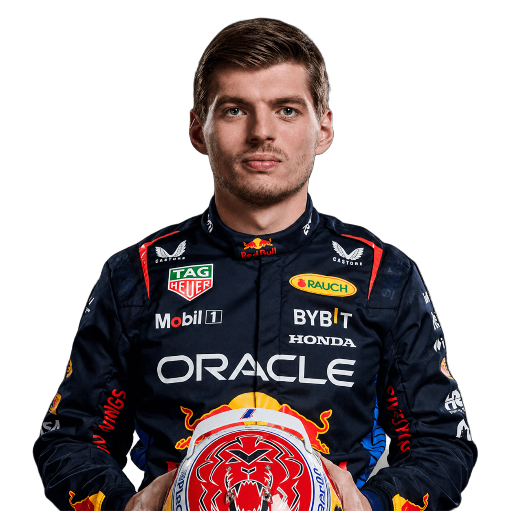

10
Vitórias consecutivas
De Miami a Monza, em 2023 — a maior sequência de vitórias de um piloto na história da Fórmula 1.

Sem limites, sem meio-termo. Correr no limite é a única forma que conheço — dentro e fora da pista.


Resultado corrida a corrida, ritmo de prova, estratégia de pneus e os bastidores do box da Red Bull em cada Grande Prêmio.
Sim racing com a Verstappen.com Racing, projetos pessoais, campanhas de patrocinadores e conteúdo exclusivo para os fãs.
De Miami a Monza, em 2023 — a maior sequência de vitórias de um piloto na história da Fórmula 1.
Em 22 corridas disputadas em 2023, um aproveitamento de 86% — recorde absoluto da categoria.
17 anos e 166 dias na Austrália de 2015: o piloto mais jovem a largar em um GP — recorde hoje impossível de bater pelas regras da Superlicença.
18 anos e 228 dias em Barcelona, 2016 — o vencedor mais jovem de um Grande Prêmio.
2021 a 2024: entra para o grupo restrito de pilotos com quatro ou mais campeonatos mundiais.
Mais de mil voltas na frente em uma única temporada — cerca de três quartos de todas as voltas do ano.
| GP | Circuito | Grid | Resultado | Pts |
|---|---|---|---|---|
| Austrália | Albert Park | P1 | 1º | 25 |
| China | Xangai | P4 | 3º | 15 |
| Japão | Suzuka | P1 | 1º | 25 |
| Bahrein | Sakhir | P6 | 4º | 12 |
| Arábia Saudita | Jeddah | P1 | 2º | 18 |
| Miami | Miami | P3 | 2º | 18 |
| Emília-Romanha | Ímola | P1 | 1º | 25 |
| Mônaco | Monte Carlo | P4 | 4º | 12 |
| Espanha | Barcelona | P2 | DNF | 0 |
| Canadá | Montreal | P5 | 3º | 15 |
| Total no período | 165 | |||
Dados exibidos para fins de demonstração deste projeto. Resultados oficiais em formula1.com.
Quatro títulos consecutivos de Campeão Mundial de Pilotos: 2021, 2022, 2023 e 2024 — todos pela Oracle Red Bull Racing.
Na Fórmula 1, o número 1 é reservado ao campeão mundial em exercício, que pode escolher usá-lo no lugar do seu número permanente. O número de carreira do Max é o 33.
Nasceu em Hasselt, na Bélgica, mas compete sob a bandeira dos Países Baixos, país de origem do pai e ex-piloto de F1 Jos Verstappen.
As 10 vitórias consecutivas em 2023 — nenhum outro piloto passou de nove — somadas às 19 vitórias em uma única temporada, também recorde da categoria.
Comanda a Verstappen.com Racing, sua equipe de sim racing, e compete em campeonatos virtuais de endurance nas horas livres — além das ações com patrocinadores e do trabalho com fãs.
2026 marca o maior reset técnico da F1 em uma década, com chassi e unidade de potência novos e a estreia da Red Bull Ford Powertrains. O calendário oficial fica disponível em formula1.com.